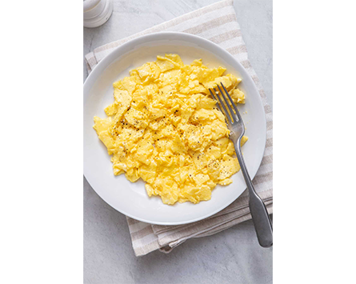

Sample Page.
Scrambling eggs may seem difficult, but once you try it you'll realize how simple it really is! Making scrambled eggs is the perfect quick and easy breakfast you can make any morning by following these 5 simple steps.
Ingredients:
Step 1: Crack your eggs into a bowl and whisk until the yolk and whites are fully mixed together.
Step 2: Add a small amount of either milk or water, whichever you prefer, to your mixed eggs. Then add a pinch of salt and pepper.
Step 3: Add oil or butter into your pan and place it on the stove over medium heat.
Step 4: Pour eggs into pan and stir continuously until eggs are cooked to your liking.
Step 5: Place cooked eggs onto your plate and add more salt and pepper to taste.
Now sit back, relax, and enjoy your simple, tastey, and high protein breakfast!